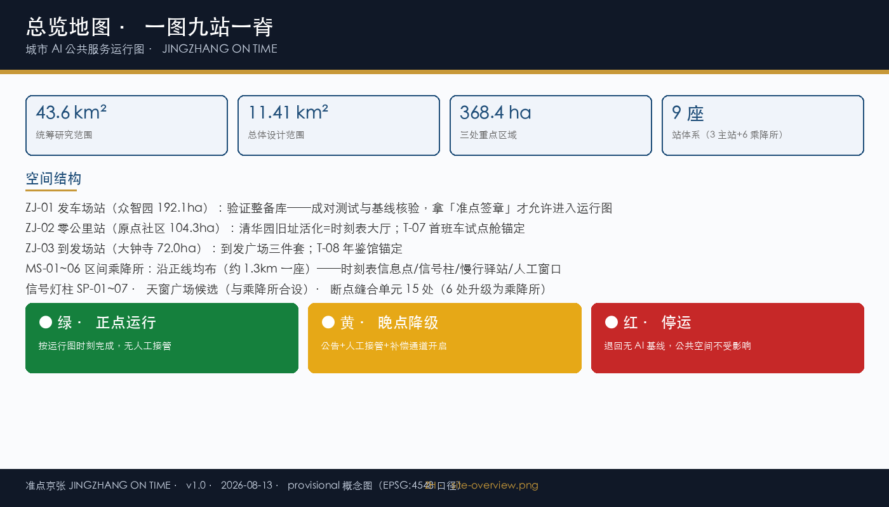
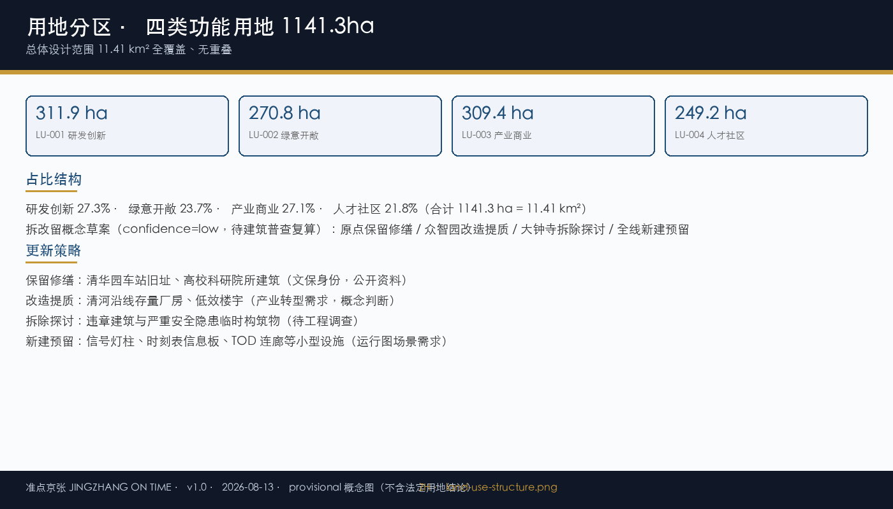
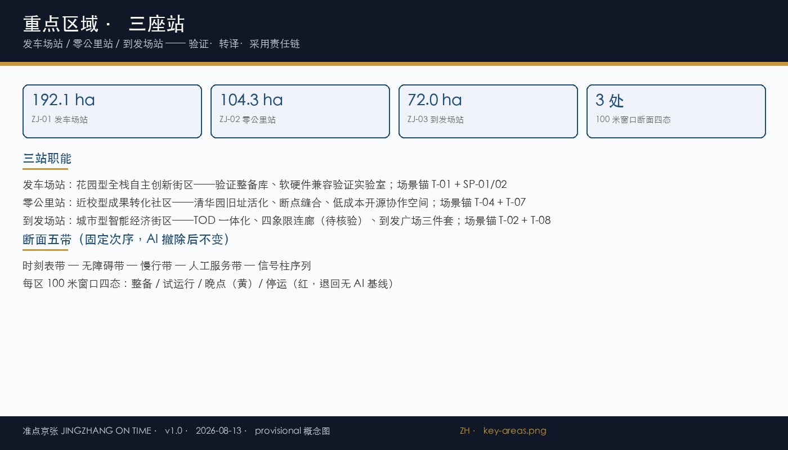
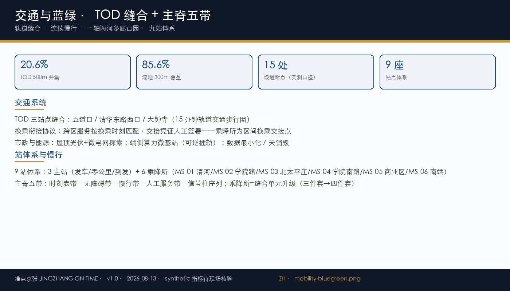
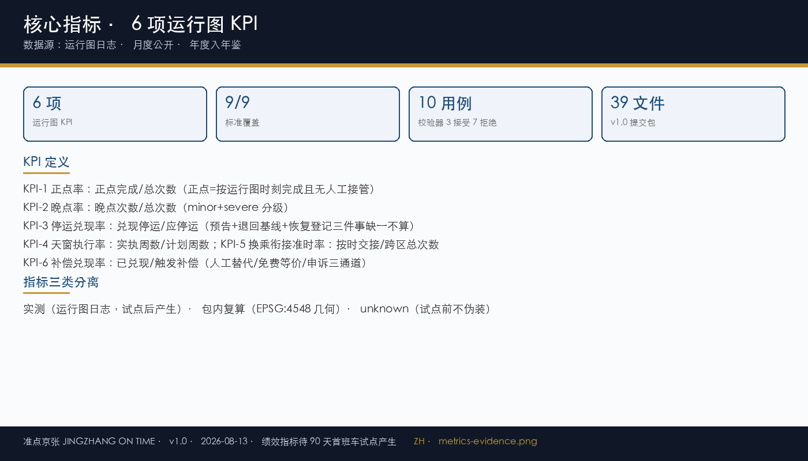

准点京张 JINGZHANG ON TIME
城市 AI 公共服务运行图：正点率可查 · 变更需公告 · 停运有预告 · 晚点有补偿 · 跨服务换乘有衔接





提案摘要
核心命题：城市 AI 公共服务应当像列车一样有公开时刻表——正点率可查、变更需公告、停运有预告、晚点有补偿、跨服务换乘有衔接。
空间结构：一图三站一脊（9.5km 运行图正线 + 发车场站/零公里站/到发场站）。
治理内核：城市运行图 schema v1.0 + 校验器（10 用例 3 接受 7 拒绝）+ 三显示信号 + 天窗制度 + G0-G4 门禁。
实施：90 天首班车试点；运营共同体五方；6 项运行图 KPI。
指标速览
| 指标 | 数值 | 状态 |
|---|---|---|
| 总体设计范围 | 11.41 km² | known（包内复算） |
| 重点区域 | 368.4 ha | known（provisional） |
| 正点率 | 待测 | unknown（试点后产生） |
图件基于临时约束边界生成，不构成法定控规红线（provisional）。版本 v1.0 · 2026-08-13。